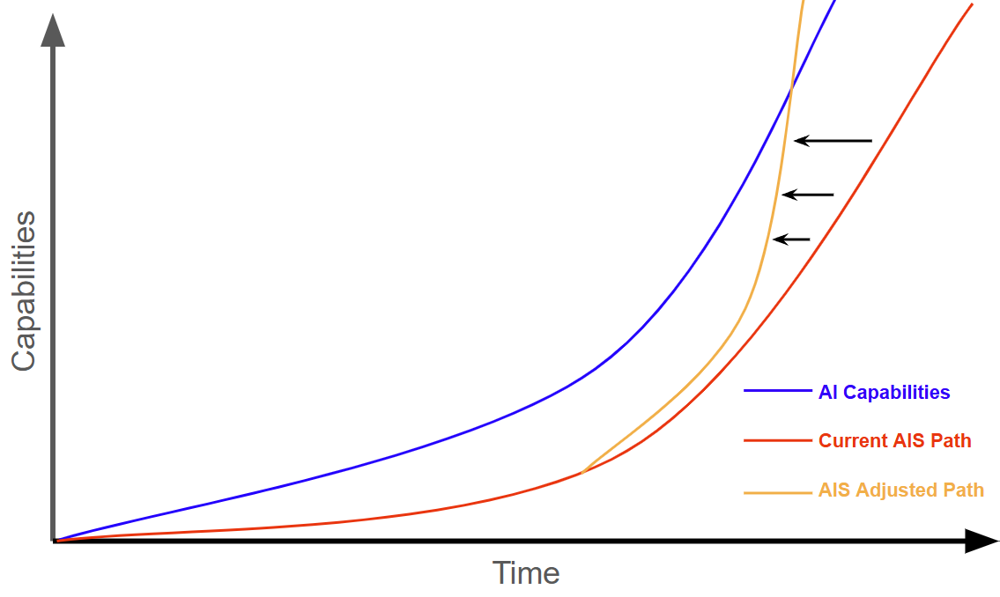

Cross-posted from LessWrong.
Epistemic Status: We're highly confident in how the larger tech industry defines roles, makes decisions and builds products based on our years of experience in it. We're fairly confident in the frontier labs operational models based on their job postings. Our suggestions for what to build and how to have gone through some pressure testing, and confidence could be raised through discussion with leaders in AI Safety to further understand what makes this space unique.
Intro
Frontier labs have adopted proven methodologies from tech to build their capabilities using matrixed organizations, including builders. This allows them to advance at a rapid pace, keeping their flywheel spinning, while AI safety struggles to keep up.
To prevent serious risks of advanced AI, AI safety needs to close that gap and one way to accomplish that is by building products that address common needs and diffuse AI safety outputs to compound their impact. There are aligned people that have extensive experience building products, but are not currently finding opportunities in existing organizations or through founder support to build them.
We (the authors and collaborators) each have 10+ years of experience at successful tech startups and in big tech. At EAGxBerkeley, we compared notes on gaps we were observing, our hypotheses on addressing them and wanted to share our perspectives with the broader community.
We're writing this post to generate awareness, discussion, and ideally to open up discussion with safety leaders, fieldbuilders and funders on how to start building.
Background
An AI safety output spans research, controls, defenses, governance, policy and more. The pace of outputs being generated continues to increase, but there is limited work to connect them back up the chain to the highest level impact of avoiding serious risks to humans. These outputs accumulate in a patchwork of papers, forum posts, blogs, GitHub repositories and more where they rely on a highly-engaged community to continuously discover, consume and adopt. It assumes that the best ideas will win out and gain traction, but provides no formal pathway to achieve that.
We observe a field primarily organized as many small research teams producing many small, loosely coupled artifacts, but lacking layers above those efforts to bring the outputs back together so that they can be quickly applied and adopted by the broader community. For example in the evals tooling landscape Inspect and Petri exist as frameworks but no layer sits above them to standardize the techniques, processes, data and connect all phases of evaluations to ensure that trustworthy results and reporting are generated.
Coefficient Giving's Fall 2026 Project Tailwind highlights this in multiple areas, such as this challenge statement for their proposed AI uplift for AI Safety initiative:
"There is a coordination failure here: investing in tools and best practices for using AI to accelerate AI safety and governance is a public good that individual contributors often lack capacity for. The individuals already doing this work have limited resources and can't serve the entire field."
Threat model
We believe that AI is not normal technology and poses serious risks to humans during both development and deployment across misalignment, misuse, loss of control, and systemic and structural harm. Across all these vectors products and tools play a role in harm reduction (in addition to research and governance). There is awareness of the importance of products [goodgravy 2022, Hobbhahn 2026] and tools [Jones 2021, BlueDot 2025], yet broadly AI safety doesn't clearly differentiate between the two currently, nor does it robustly support creating products.
Examples of gaps observed in AI safety products and tools
Below is a limited sample of the types of needs we've observed across AI safety with concrete references.
Risk vector and Jobs to Be Done | Exists | Missing |
|---|---|---|
Misalignment: know when a model has the wrong objective and why | Products: Neuronpedia Tools: Petri, Bloom, TransformerLens | Access to frontier models beyond black-box [Casper 2024] |
Misuse: know when a model is being used for harmful purposes, and if a deployment can be jailbroken | Products: per-deployer app-layer solutions (Lakera, Giskard) | Shared frontier uplift evals (vs bespoke ones from AISI, METR) |
Loss of control: detect and stop autonomous scheming or sabotage | Products: Apollo Watcher (monitor for coding agents); agent tracing in Weave and Tools: ControlTower (Redwood, Equistamp, Luthien), Inspect Sentinel, Luthien-Proxy, ControlArena (UKAISI) | Shared autonomy evals. Shared protocol results. An agreed stop mechanism. Limited benchmark coverage for evade-oversight, self-replication, and AI R&D (Bench-2-CoP 2025) |
Systemic and structural: know what is trending towards failure and disempowerment | Almost nothing specific. The nearest instruments are cross-cutting capability trends and incidents. | Measurement for concentration of power, epistemic harm, multi-agent effects |
Across all four risk vectors | Products: Docent, Epoch hub for capability trends, AI Incident Database for failures. Tools: eval framework (Inspect) | Widespread safe access layers (e.g. OpenMined) Standardized reports for policymakers with actionable insights. Standard elicitation, so two evaluators with the same access get the same result A full harness to monitor and reproduce a failure (logging, reconstruct, re-run) |
How to Build Products that Compound AI Safety's Impact
While the idea of a product and related roles stretches back decades, it really began to coalesce in the 2000s and saw broad adoption in the 2010s. Although it continues to evolve as AI disrupts our ways of working, the principles remain the primary structure of how big tech and the frontier labs operate at scale. This allows them to rapidly pivot to whatever will deliver the most value by focusing on deeply understanding their users needs through user research and objective metrics that allow them to continuously learn and iterate while measuring themselves through outcomes over outputs.
Products vs tools
A product can be used by a wide range of people [Brooks 1975, chapter 1], without discussion with the creator, for a "job-to-be-done" (JTBD). These jobs are about achieving an outcome: "People don't want to buy a quarter-inch drill. They want a quarter-inch hole!" [Levitt 1969]. A product has customers: people who choose to adopt it and pay for it with their time (always) and their money (often). Products are complex to build and deliver, and require specific expertise. In the tech industry, a "product team" [Cagan 2019] refers to a cross-functional team with product managers and engineers, and often designers and data scientists / data engineers. A product often starts off as a tool: built for a narrow purpose, by and for a narrower group of people. A product has one accountable owner for whether it gets adopted [Cagan 2017] whereas a tool has maintainers. Tools (such as open source libraries) may be powerful but are typically provided with few or no guarantees of suitability, which hampers widespread adoption.
Theory of Change
Our proposal is that building a new layer of products that continuously build on those outputs and connect them to users wherever they are will lower the barrier to adoption and application, and thus support bending the curve of AI safety efforts to close the gap to frontier capabilities. We would observe this through near-term signals that show a correlation of this work and increasing the output rate while decreasing the effort per safety output. In the medium-term we expect the time to detect a novel harmful capability or propensity to decrease, while the trustworthiness and credibility of outputs bend upwards.
Impact | Avoid serious risks to humans during development and deployment of advanced AI across misalignment, misuse, loss of control, systemic and structural harm. |
Goal | AI safety closes the gap to, and then keeps pace with frontier capabilities. |
Inputs | A pipeline: of experienced builders from industry paired up with a corpus of existing but disconnected AI safety research, analysis, policy, tooling and infrastructure work. Orgs and funding that are bought into the need to scale and are comfortable supporting something currently undefined. |
Outputs | Products: that solve common user needs built on top of existing tooling and infrastructure and alongside existing roles, by a newly defined builder role with prioritization authority and accountability to outcomes. |
Primary Outcome | Applied & Adopted: AI safety outputs (research, controls, defenses, governance, policy and more) are broadly diffused across all functions, roles and orgs allowing widespread application and adoption. The field's output compounds instead of accumulating. |
2nd Outcome | Shared Scaffolding: AI safety orgs operate at maximum effectiveness as they adopt common infrastructure, tooling and processes to be used internally. |
3rd Outcome | Reproducible & Comparable: AI safety outputs become faster, more trustworthy, and ready to be reproduced and reused because shared tooling makes it easy to access and review everyone's work. |

Figure 1: Demonstration of bending AI safety curve to close and then bypass AI capabilities in support of alignment to reduce risks of harms.
Principles of building AI safety products
What we've observed independently, through conversations with those in AI safety, and through sources like Project Tailwind 2026 initiatives and Forethought's Design sketches for a more sensible world is a through line of common principles. We think products should be built on principles like the ones below to maximize their adoption and usage:
- Standardization: AI safety work and outputs are performed and captured consistently to create work that can be trusted and easily understood. Supports operational discipline, clear methodologies, calibrated reporting and excellent security. Examples: "...clear methodology, credible assessors (including potential subcontracts with existing third-party evaluators), calibrated reporting, and excellent internal security." - Tailwind 2026: Independent AI auditors. "Maintain a recommended suite of best practices for measuring and promoting monitorability of frontier models" - Tailwind 2026: Oversight of CoT monitorability
- Centralization: Setups, inputs, results, analyses, final outputs and more are stored centrally in a consistent way that makes it easy for anyone to access and reuse. Examples: "That evidence is scattered across papers, blog posts, and Twitter threads, and the decision-makers who most need a clear view rarely have time to assemble it themselves." - Tailwind 2026: State of AI Risk. "understanding the state of AI safety practices across different companies is difficult, and there's no one canonical resource tracking and evaluating their safety practices" - Tailwind 2026: Frontier lab Accountability
- Democratization: Support for anyone to set up, run and review any AI safety work. Supports task completion by lower-tier roles without direct intervention or oversight from domain experts. "Highly customised tools help individuals to understand themselves better and make decisions they endorse. We vastly uplift forecasting and scenario planning, massively improving our strategic awareness, and democratizing access to this kind of information." - Forethought: Design Sketches for a More Sensible World. "Providing non-technical audiences – and policymakers, in particular – with clear, accurate, and compelling information about the frontiers of AI is critical for sound policymaking and regulation." - Tailwind 2026: Frontier Capabilities Observatory.
- Modularity and flexibility: Easily share, explore, try and adopt emerging AI safety capabilities. Allows rapid diffusion of new work across the space. Example: "Improving evals tooling is fairly architecture agnostic, or could be much more quickly adapted to future changes than it would take to build from scratch in the future." - LessWrong: Hobbhahn 2026
- End-to-End User Journeys: Create tools and solutions that span complete user journeys without the need to jump between or merge together multiple tools, datasets and codebases. Examples: "A largely automated eval stack that is able to iteratively design, test, and improve evaluations" - LessWrong: Hobbhahn 2026 . "Given a question, the tool gathers relevant evidence, lays out the competing arguments, identifies the main points, and provides an overall assessment with a stated confidence level." - Tailwind 2026: AI for decision-makers
Product Examples
- Centralized storage of research, differential data and more - Make it easy for anyone or any product to access all relevant data and information in their domain of interest.
- Policymaking Intelligence - Bridge the gaps between technical, bio, nuclear, cyber and other domains to policymakers, making it easy to stay up to date and make informed decisions.
- Unified automated evals platform - Encourages consistent setups, analysis and outputs while supporting emerging techniques from research through a marketplace.
- Unified controls platform - Makes it easy to design, stress-test and compare safety protocols and monitors for potentially misaligned AI agents, measuring the safety-usefulness tradeoff through consistent red-team vs. blue-team control evaluations.
Additionally, Ankur Pandey has generated a related sample list here as part of his AISafety.Builders fellowship.
How to Build Products
Modern products and the teams that build them largely operate off of a few standard operating principles and practices built upon Agile, with some highlights being:
- Focus on the user - Deeply understand the user through user interviews, studying their feedback and objective measures, and ensure implementation meets their requirements.
- Bias for action - Continuously deliver proofs of concept and then small improvements to working software over long research and implementation cycles.
- Flexibility - Plans frequently change due to the above. Be willing to quickly pivot when something new emerges or something isn't working out.
- Measure outcomes over outputs - An output is simply creating something. Outcome is how you know the outputs delivered created the expected impact and value.
- Matrixed roles - Most orgs feature multiple people working together representing their points of view to arrive at a solution that balances all the variables of delivering high quality workflows through scalable and maintainable code and infrastructure. More on this below.
Why Agile or Other Common Methodologies?
Given the existing gap to frontier capabilities, there is no time to reinvent the wheel while wasting time on ideas that are not panning out or delivering the largest impact. These methodologies offer a standardized way to cut through noise and organize work to be efficient and highly effective. They offer a set of principles and values, rather than a hard set of rules, although they have often gotten a bad reputation for being implemented as strict mandates.
While the exact implementation of these continue to evolve and vary org to org, overall big tech, startups and the frontier labs continue to employ them. Why? Because they're proven to help teams move faster and cheaper. Leading Agile consultant BCG estimates Agile can unlock 2-4x acceleration in time-to-market and new product delivery while also offering 15-25% reduction in development costs. The 2025 State of Agile reported, "Focus is shifting to outcomes: Customer satisfaction (52%) remains the primary measure of success, followed by efficiency and cost reduction (40%)."
Who Builds Products
Anyone can build a product, regardless of their job title or function as long as they're focused on delivering outcomes. An exceptionally broadly talented engineer or researcher may be able to cover all or most functional areas below. But, it's often a lot of context to hold together, they don't always have strengths in each area, and there is a lot of benefit in regular discussion among peers with diverse points of view. This also differs from the generalist operational roles: the builders own the what, why and how and are often called to define that from vague open-ended problems. Paul has written more about the builder role profile, its differentiation and a sample job description in Experienced Builders Role Profile and Job Descriptions.
These are some common roles used on teams developing products:
- Product Managers - Represents the inputs from users, leadership and stakeholders. Leads the feature prioritization process and is accountable to the agreed upon outcomes.
- UX Designers - Often use design thinking, design sprints and rapid prototyping to quickly gather data on how users interact with systems, in order to improve their design. UX Researchers use human-computer interaction (for software systems) and the techniques described in The Design of Everyday Things (for anything including physical products) to understand the complex relationship between humans and products.
- Engineers - Represents creating outputs that can be scaled and sustainable. Identifies the options that can solve user problems the fastest.
- Scientists, Researchers & Analysts - Represents robust methods for getting the right answers from the data that they may also help pull or generate. Especially important for products that use AI and/or ML.
A note on role flattening in the age of AI: While it's true that product and researcher/analyst roles are changing, product and engineering are owning more design, etc, it's still important to have core roles that cover the full product development lifecycle including continuous improvement. For example, engineering should still own ensuring the code implemented is robust, secure and ready to scale. Analysts should validate feedback and metrics pulled by product or engineering that's driving decisions, and product managers should guide how that data impacts feature prioritization.
Conclusion and Call to Action
We think there is a large set of challenges across the higher layers of AI safety that call for products to be built that would help close the gap to frontier capabilities. Further, we think that applying industry standard product practices and methodologies, and employing experienced builders from industry would allow them to be built faster, and more efficiently.
How to Support This
We'd like to hear from funders, fieldbuilders, organizational leaders, and any other leaders in AI safety that deeply understand the current state and plans to close the gap to frontier capabilities to discuss integrating experienced builders into the ecosystem to build products.
We propose AI Safety orgs take the following steps:
- Field-builders should recruit experienced builders and help them build AI safety context and define potential products, then connect them to opportunities.
- Organizations should hire candidates that help existing orgs adopt product best practices, invest in building products, and hire builders to accelerate their development.
- Funders should support new organizations that build tools and products, especially if these don't cleanly fit into an existing organization's mission.
Appendix
References
A lot has already been written about generalists and mid-to-late career professionals entering AI safety. The below articles are some of what we built on top of as we were writing this article.
- AI Safety's Biggest Talent Gap Isn't Researchers. It's Generalists. - Topaz - Effective Altruism Forum
- I Want You for AI Safety - Sophie Kim - The Counterfactual
- AI Safety Needs Mid-Career On-Ramps - Sophie Kim - Effective Altruism Forum
- AI safety needs more operations professionals (Scaling organisations making AI go well) - Matt Beard - 80,000 Hours
- Lateral Workshop Applications: A Case Study - Jacob Brinton, Seth Lifland - LessWrong
- New talent is coming to AI safety. What happens next? - Enisa Ismaili - Effective Altruism Forum
- Meta: The Job (Almost) Nobody Can Picture - Devon Fritz - Substack
- The Grown-Ups Aren't Coming (Philanthropic capital is coming faster than the infrastructure to absorb it, and infrastructure takes years to build. Please build it!) - Devon Fritz - Substack
- The case for AGI safety products - Marius Hobbhahn - LessWrong
- The Case for Building AI Safety Tools - Ankur Pandey - Substack
We'd like to thank Hernan Barijhoff for reviewing this post as it evolved, as well as a handful of others that helped grow this idea and provide initial inputs, but didn't wish to be named.